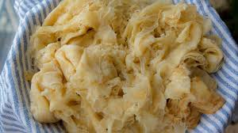

Roti Recipe

Description of Recipe
What is Buss Up Shut? It is that flaky, soft, and warm pan fried dough that will make all of your worries go away.
Buss Up Shut is a super soft pan fried flat bread that is typically found in places that are serving up yummy eats from Trinidad & Tobago. Some refer to it as paratha while others also refer to it as “buss up shut” (the vernacular for “busted-up shirt”). The dough is fluffy and light and when done properly should resemble a torn shirt.
This bread is usually paired with curried meats and vegetables but can be enjoyed with all sorts of sides. It is so delicious that it can even be consumed as is. I love using the roti skins to soak up gravy that is on the bottom of my dish while also using it to scoop up whatever protein I decide to plate it with.
The secret to this dough is patience and love! It is pretty easy to make but requires resting for the dough, smearing an oil mixture in between the dough to help create those flakey layers, pan frying, and then clapping the dough to get the torn up shirt texture.
Everyone makes their dough a bit different but I have found that a coconut oil/butter mixture gives me the best fluffiest and softest dough. The goal is to get a crispy coating on the dough while still get a soft and flakey bread.
Here is my recipe for Buss Up Shut
Ingredients
- 2 cups of All Purpose Flour
- 3/4 of luke warm water
- 2 teaspoons of brown sugar
- 2 teaspoons of baking powder
- 1 teaspoon of salt
- 1/2 teaspoon of oil
For the Butter/Oil Spread
- 1 tablespoon of butter
- 1 tablespoon of oil (Coconut Oil works great here)
Directions
Making Your Roti Dough:
- In a large bowl, add flour, brown sugar, salt and baking powder. Mix until combined. Then, add in your water gradually. Mixing and combining after each time. You will be left with a wet and sticky dough.
- Sprinkle the dough with flour and drizzle with oil.
- Cover the dough and let it rest for 30 minutes.
Filling Your Dough:
- For small sized roti, divide your dough into four equal parts. For larger roti skins, divide your dough in half.
- Flour your surface and grab one piece of dough. Sprinkle your dough with flour and press down to form a circular disk.
- Flour your rolling pin and then use your rolling pin to flatten the dough into a 10 inch disk.
- Spread the butter and oil spread on the dough. Then create a slit in the dough from the center and cut downward. Roll the dough clockwise into a cone. Take the end of the dough and tuck under the cone. Push the top of the cone downward and set aside in a bowl.
- Repeat for the remaining pieces of dough until all of your dough is coated with the spread, rolled thin, filled, and formed. Rest your dough balls for at least 30 minutes.
Cooking Your Roti:
- When you're ready to cook your roti. Heat a hot pan under high heat. Brush with oil.
- Working with one dough at a time, take one of your dough balls and sprinkle with flour (enough to prevent the dough from sticking to your rolling pin). Press your dough into a flat disk and then flatten with your rolling pin. Ensuring that the edges of the dough are thin. Grab the dough with the palm of your hand and transfer to hot pan.
- Brush the top of the dough with oil while in the pan.
- Flip the dough when you begin to see bubbles forming on top (similar to making pancakes). After flipping, rotate the dough while in the pan to ensure that the oil spreads underneath.
- Brush the top of the dough with oil once more and flip.
- Beat the dough in the pan with two wooden spoons while pulling the edges of the dough towards the center. Repeat until the dough becomes flakey. Transfer to a clean cloth and cover. Repeat for remaining dough.